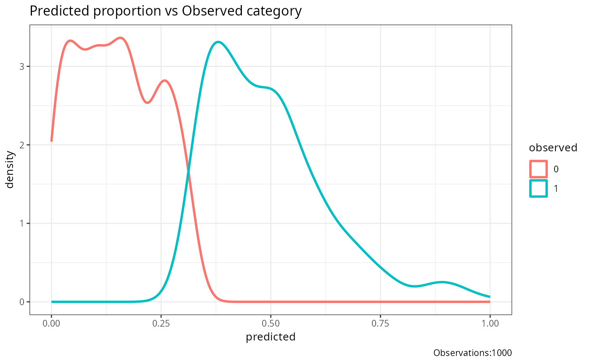

This function creates a separability plot showing the density distribution of predicted probabilities for different observed categories.
Arguments
- observed
Vector of observed outcomes. This can be numeric or factor values representing the true class labels.
- predicted
Vector of predicted outcome probabilities. This should have the same length as the observed vector and represent the predicted probabilities.
- base_size
Integer value representing the base font size for the plot. Defaults to 10.
- title
String representing the title of the plot. Defaults to an empty string.
Details
This function generates a separability plot using ggplot2. It shows the density distribution of predicted probabilities for different observed categories. The plot helps to visualize how well the predicted probabilities separate the different observed categories.
The plot includes the following components: -Density curves for each observed category, representing the distribution of predicted probabilities. -A legend indicating the observed categories. -The total number of observations is included in the plot caption.
Examples
# Example with numeric class labels
df1<-data.frame(matrix(.999,ncol=2,nrow=2))
correlation_matrix<-as.matrix(df1)
diag(correlation_matrix)<-1
df1<-generate_correlation_matrix(correlation_matrix,nrows=1000)
df1$X1<-ifelse(abs(df1$X1) < 1,0,1)
df1$X2<-abs(df1$X2)
df1$X2<-(df1$X2-min(df1$X2))/(max(df1$X2)-min(df1$X2))
plot_separability(observed=round(abs(df1$X1),0),predicted=abs(df1$X2))
